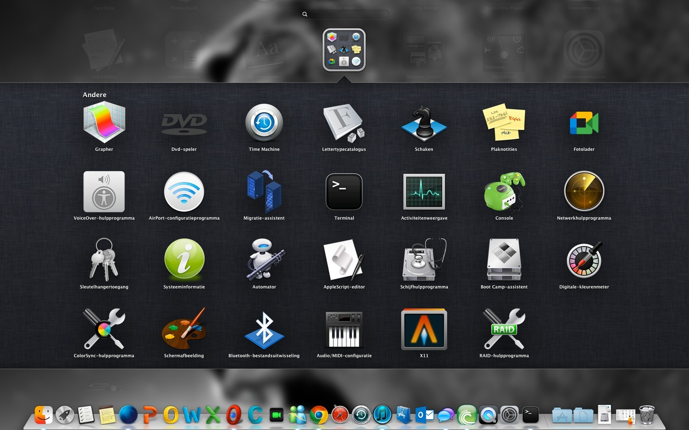
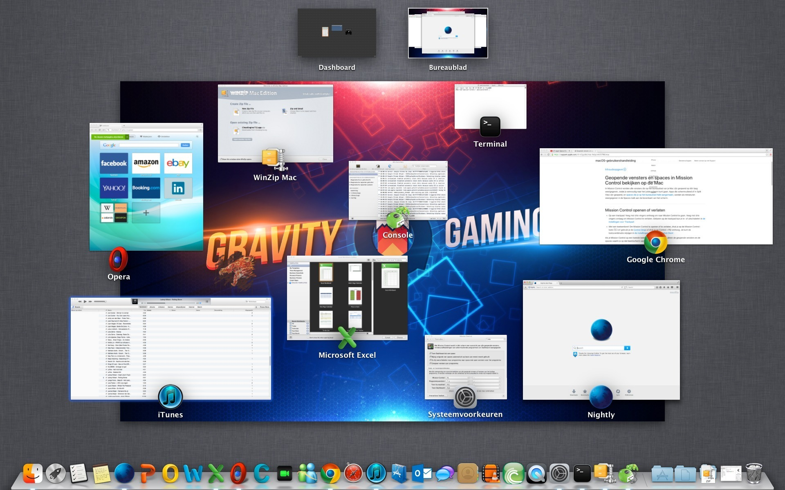
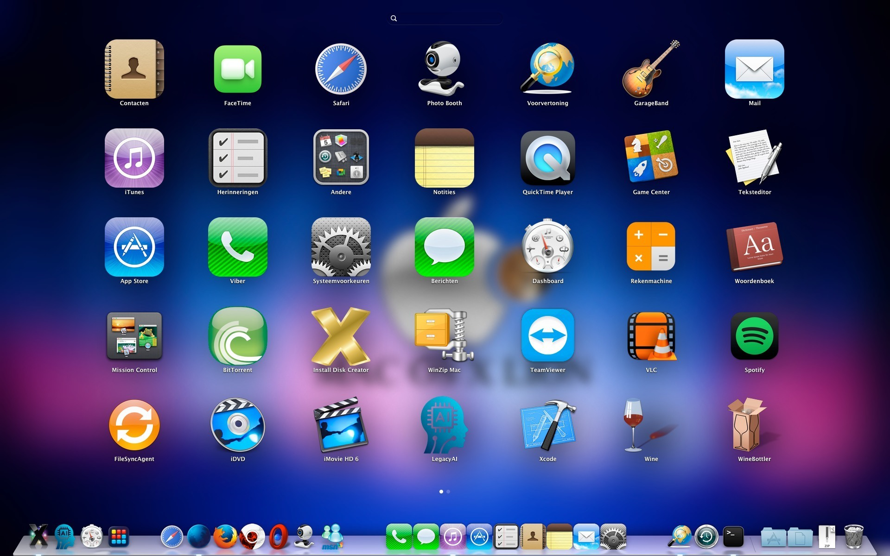
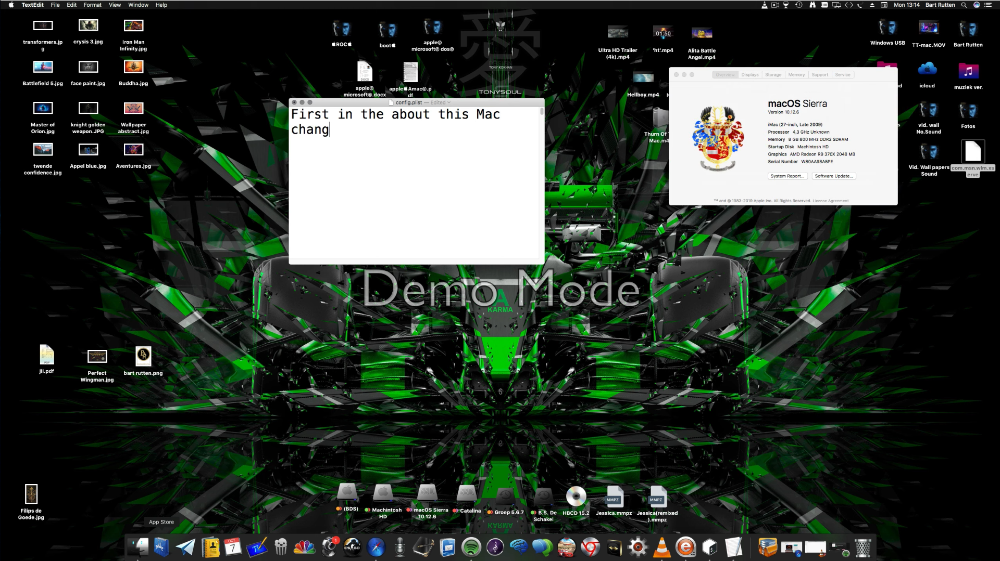
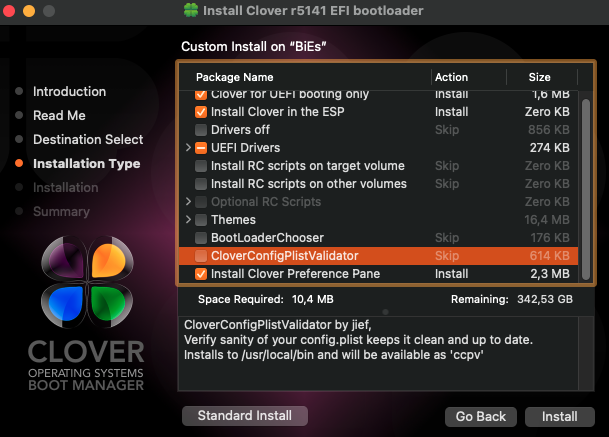
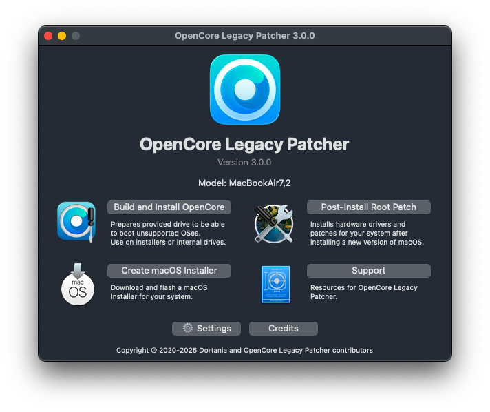

Apple macOS
diskutil list # Kies en controleer de externe schijf # Daarna volgt een expliciete bevestiging.Download script
Doorzoek de 11 artikelen over BIOS, UEFI en firmware.
Kies je besturingssysteem en download het bijbehorende formatteringsscript.
Let op: formatteren wist gegevens op de gekozen schijf. Controleer altijd het schijfnummer, de grootte en het model. Gebruik dit alleen op de juiste externe USB-schijf. De scripts vragen om een expliciete bevestiging.
diskutil list # Kies en controleer de externe schijf # Daarna volgt een expliciete bevestiging.Download script
diskpart list disk exit # Controleer het juiste schijfnummer.Download script
lsblk -o NAME,SIZE,MODEL,TRAN,TYPE,MOUNTPOINTS # Controleer de externe schijf.Download script
De ZIP bevat de macOS-, Windows- en Linux-versie.
Opmerking: Windows' ingebouwde formattering kan beperkingen hebben bij grote volumes. Deze tool is bedoeld voor FAT32-LBA. Controleer of DiskPart zonder fouten is voltooid en controleer achteraf het MBR-partitietype 0x0C.
FAT32: een breed ondersteund bestandssysteem met een maximale bestandsgrootte van 4 GiB min 1 byte.
LBA: Logical Block Addressing, waarmee schijfsectoren logisch worden geadresseerd.
MBR-types: 0x0C duidt FAT32-LBA aan; 0x0B duidt FAT32 aan; 0x1C is de verborgen FAT32-LBA-variant.
Compatibiliteit: FAT32-LBA maakt een schijf niet vanzelf opstartbaar. Firmware, partitietabel en bootbestanden spelen ook mee.
Veiligheid: formatteren wist gegevens. Controleer de juiste schijf en maak vooraf een back-up.




Kies je favoriete muziekplatform.
Video's en muziek
Open YouTubeNummers en playlists
Open SpotifyTracks en mixes
Open SoundCloudTip: voeg een track- of playlistlink toe om de spelers hier rechtstreeks te laten afspelen.
You can try creating a macOS USB installer from Windows using a compatible bootable disk image from a trusted, authorized source.
For supported images, use balenaEtcher to write the image to USB. This erases the selected drive, so back up important files first.
Choose the appropriate file for your hardware.
Controleer compatibiliteit voordat je een BIOS- of EFI-bestand gebruikt.


Restart your PC and press the motherboard's boot-menu key, commonly F12, F2, or End (the key varies by manufacturer). Select the USB device's UEFI entry when available.
If a text-based boot prompt appears, use the arrow keys and Enter as indicated on screen to navigate the available options. In a UEFI file browser, open the appropriate EFI folder and select a compatible bootloader file, such as BOOTx64.efi or CLOVERX64.efi, depending on your setup.
OpenRuntime.efi is normally an OpenCore support driver, not a standalone bootloader. FAT32-LBA formatting alone does not guarantee that a USB drive is bootable; the partition layout, firmware mode, and boot files must also be compatible.
On a compatible Apple computer, download the macOS installer application (.app) and place it in the /Applications folder. Follow Apple's official guide to creating a bootable macOS installer.
If the installer comes in an archive or package, extract it using an appropriate tool and follow the package instructions. If you do not have access to a Mac, ask an Apple service provider or computer retailer whether they can help you create a bootable installer.
Replace MyVolume with the name of your USB volume. These commands erase the selected volume. Verify the USB volume and the exact installer application name before running a command.
sudo /Applications/Install\ macOS\ 27\ Golden\ Gate.app/Contents/Resources/createinstallmedia --volume /Volumes/MyVolumesudo /Applications/Install\ macOS\ Tahoe.app/Contents/Resources/createinstallmedia --volume /Volumes/MyVolumesudo /Applications/Install\ macOS\ Sequoia.app/Contents/Resources/createinstallmedia --volume /Volumes/MyVolumesudo /Applications/Install\ macOS\ Sonoma.app/Contents/Resources/createinstallmedia --volume /Volumes/MyVolumesudo /Applications/Install\ macOS\ Ventura.app/Contents/Resources/createinstallmedia --volume /Volumes/MyVolumesudo /Applications/Install\ macOS\ Big\ Sur.app/Contents/Resources/createinstallmedia --volume /Volumes/MyVolumesudo /Applications/Install\ macOS\ Catalina.app/Contents/Resources/createinstallmedia --volume /Volumes/MyVolumesudo /Applications/Install\ macOS\ Mojave.app/Contents/Resources/createinstallmedia --volume /Volumes/MyVolumesudo /Applications/Install\ macOS\ High\ Sierra.app/Contents/Resources/createinstallmedia --volume /Volumes/MyVolumesudo /Applications/Install\ OS\ X\ El\ Capitan.app/Contents/Resources/createinstallmedia --volume /Volumes/MyVolume --applicationpath /Applications/Install\ OS\ X\ El\ Capitan.appReplace MyVolume with the name of your USB volume. This command erases the selected volume, so check the volume name carefully before running it.
sudo /Applications/Install\ macOS\ Monterey.app/Contents/Resources/createinstallmedia --volume /Volumes/MyVolumeYou can prepare a bootable macOS USB installer using Windows and compatible tools. Obtain a compatible installer image from a legitimate source. Not every image format is supported by every tool.
Use the official balenaEtcher application to write a compatible image to a USB drive. This erases the selected USB drive.